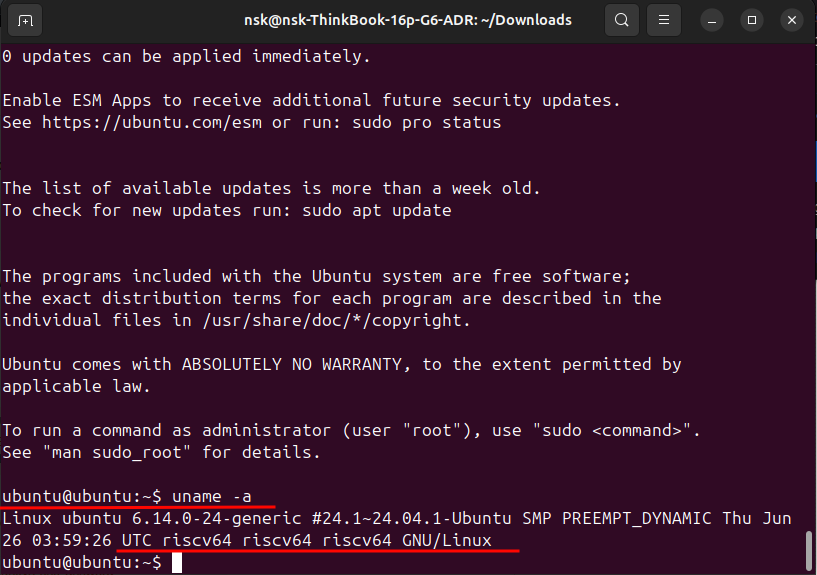
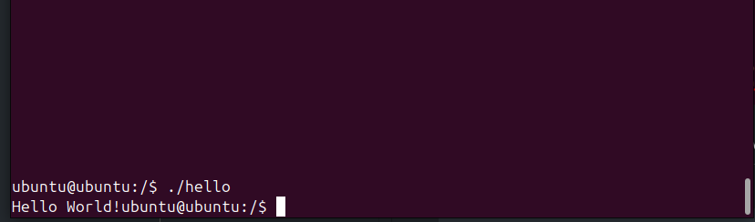

Установка Ubuntu (Risc-V) на QEMU
Официальный источник.
Установка зависимостей
Для загрузки виртуальной машины RISC-V вам потребуются следующие пакеты:
opensbi— OpenSBI реализует двоичный интерфейс супервизора RISC-V (SBI).qemu-system-riscv64— QEMU используется для эмуляции машины RISC-V.
и один из
qemu-efi-riscv64– EDK II является эталонной реализацией API UEFI.u-boot-qemu— U-Boot — это еще одна прошивка. Он реализует подмножество API UEFI.
Устанавливаем
sudo apt update
sudo apt install opensbi qemu-system-riscv64 qemu-efi-riscv64 u-boot-qemu
Запуск при помощи готового образа ОС
Далее, необходимо скачать образ операционной системы на базе
risc-v: ubuntu-24.04.3-preinstalled-server-riscv64.img.xz или найти для себя подходящий здесь.Распакуем архив:
xz -dk ubuntu-*-preinstalled-server-riscv64.img.xz
Запускаем при помощи u-boot
qemu-system-riscv64 \
-cpu rv64 \
-machine virt,acpi=off -m 4G -smp cpus=2 \
-nographic \
-kernel /usr/lib/u-boot/qemu-riscv64_smode/uboot.elf \
-netdev user,id=net0 \
-device virtio-net-device,netdev=net0 \
-device virtio-rng-pci \
-drive file=ubuntu-*-preinstalled-server-riscv64.img,format=raw,if=virtio
После завершения вы видите в терминале след. надпись:
[ 68.346028] cloud-init[703]: Cloud-init v. 22.2-0ubuntu1~20.04.3 finished at Thu, 22 Sep 2022 11:35:28 +0000. Datasource DataSourceNoCloud [seed=/var/lib/cloud/seed/nocloud-net][dsmode=net]. Up 68.26 seconds
Нажимаем
Enter. Далее вас попросят ввести логин и пароль, по умолчанию логин -ubuntu, пароль -ubuntu. После ввода Вас попросят поменять данный пароль на свой.Готово.

Пробуем скомпилировать программу
По стандарту:
sudo apt-get update
sudo apt install build-essential
Проверяем, есть ли GCC:
gcc --version
Создаем файл
hello.c:
#include <stdio.h>
int main(){
printf("Hello World!");
return 0;
}
Компилируем и запускаем:
gcc hello.c -o hello
./hello
